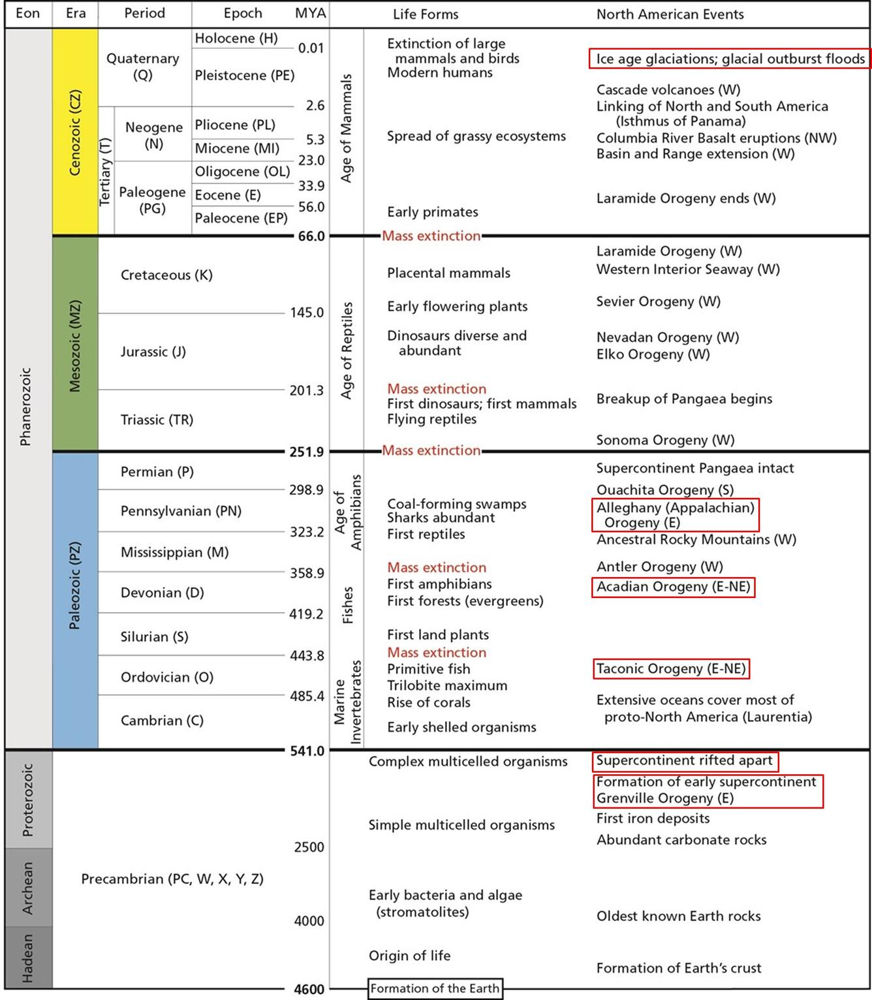

Strati sedimentari del Grand Canyon —

Scala dei tempi geologici (USGS): dal Precambriano al Quaternario con eoni, ere, periodi ed epoche.
La Terra ha 4,54 miliardi di anni. Il tempo geologico è il «calendario del passato» che registra gli eventi della storia terrestre. Le rocce che permettono questa datazione sono principalmente le rocce sedimentarie, che si depositano a strati e catturano informazioni sull'ambiente di formazione.
Il principio di sovrapposizione (strati più in basso = più antichi) vale per le rocce sedimentarie. Non vale per le rocce ignee intrusive: un plutone risale dal basso e si inserisce in rocce preesistenti → la roccia più recente (intrusione) si trova sotto rocce più antiche (incassanti).
Nelle rocce sedimentarie, gli strati più in basso sono più antichi di quelli in alto (i sedimenti si depositano dall'alto). Questo principio può essere contraddetto da intrusioni magmatiche (una roccia ignea intrusiva può essere più recente delle rocce che la sovrastano).
Strati sedimentari del Grand Canyon —

Scala dei tempi geologici (USGS): dal Precambriano al Quaternario con eoni, ere, periodi ed epoche.
Ogni strato sedimentario registra le condizioni ambientali del periodo: chimismo degli oceani, composizione dell'atmosfera, eventi catastrofici. Esempio: a 65 Ma, uno straterello su tutti gli oceani contiene sferule di vetro dall'impatto del meteorite che estinse i dinosauri.
È un bias di completezza dei dati, non un'accelerazione degli eventi. Come nei cataloghi sismici INGV: negli ultimi 100 anni registriamo terremoti di M 4.5, mentre di 800 anni fa abbiamo notizia solo dei più forti. Dell'Adeano non abbiamo nemmeno una suddivisione interna.
Giurassico è un PERIODO dell'era Mesozoica. Dire «era giurassica» è come chiamare «anno febbraio» — si sbaglia categoria. L'era è il Mesozoico (Triassico, Giurassico, Cretacico).
Standard globale accettato dalla Commissione Internazionale di Stratigrafia. Tre colonne su quattro riguardano gli ultimi 500 milioni di anni: le informazioni sono concentrate nei tempi più recenti, non perché nel passato non sia successo nulla, ma perché abbiamo più dati.